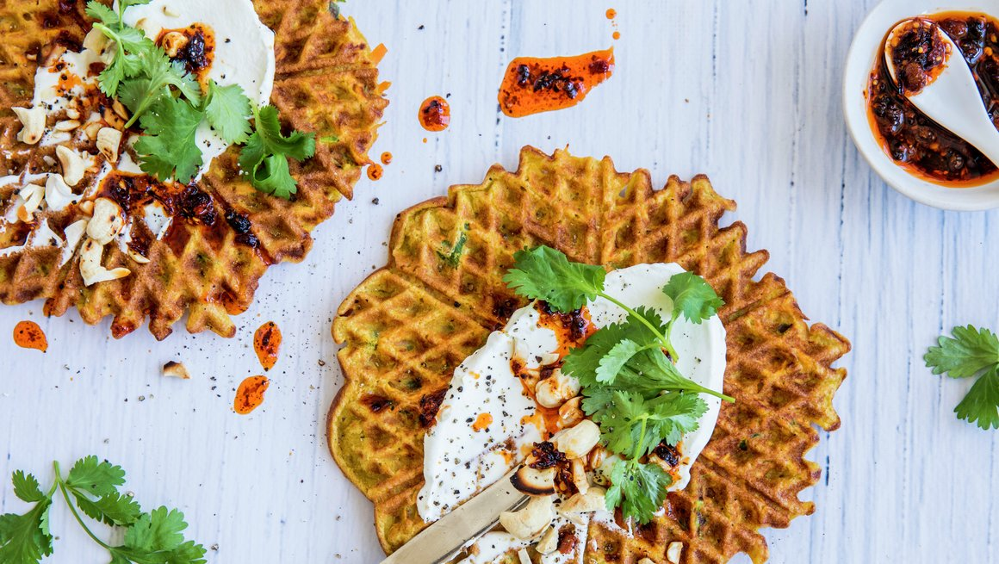

Foccacia
INGREDIENTS
portions
7
dl grovrevet søtpotet
4
stk egg
2
ss vårløk
3
ss hvetemel
1
båt finhakket hvitløk
6
ss gresk yoghurt
2
ts chiliolje
0.5
potte frisk koriander
65
g cashewnøtter (en liten pose)
Søtpotetvaffel
Riv søtpotetene grovt.
Visp sammen eggene og bland inn revet søtpotet, finhakket hvitløk, finsnittet vårløk, og hvetemel. Krydre med litt salt og pepper.
Stek vafler og avkjøl på rist (eller hold dem varme).
Rist cashewnøtter i tørr stekepanne til de blir gylne. Grovhakk nøttene.
Topp vaflene med gresk yoghurt, chiliolje, frisk koriander og hakkede cashewnøtter.
